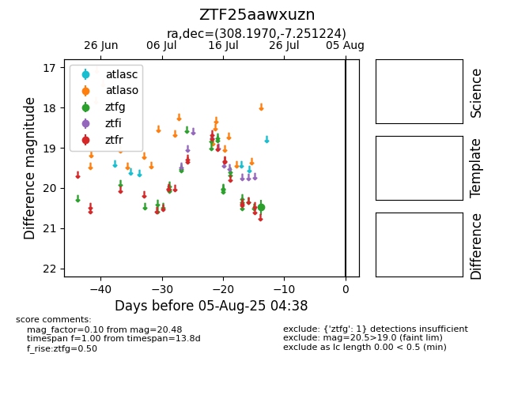

Target ZTF25aawxuzn at 2025-08-05 04:38, see:
FINK: fink-portal.org/ZTF25aawxuzn
Lasair: lasair-ztf.lsst.ac.uk/objects/ZTF25aawxuzn
ALeRCE: alerce.online/object/ZTF25aawxuzn
alt names
ZTF25aawxuzn (ztf,fink)
coordinates:
equatorial (ra, dec) = (308.1970,-7.25122)
galactic (l, b) = (38.1096,-25.80934)
photometry
last ztfg=20.48
1 ztfg detections
